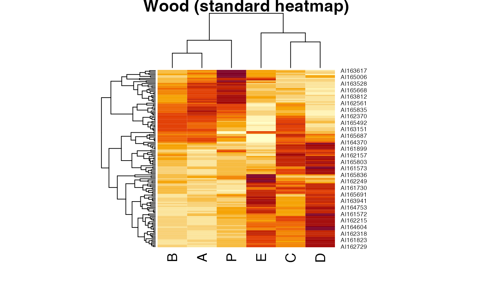
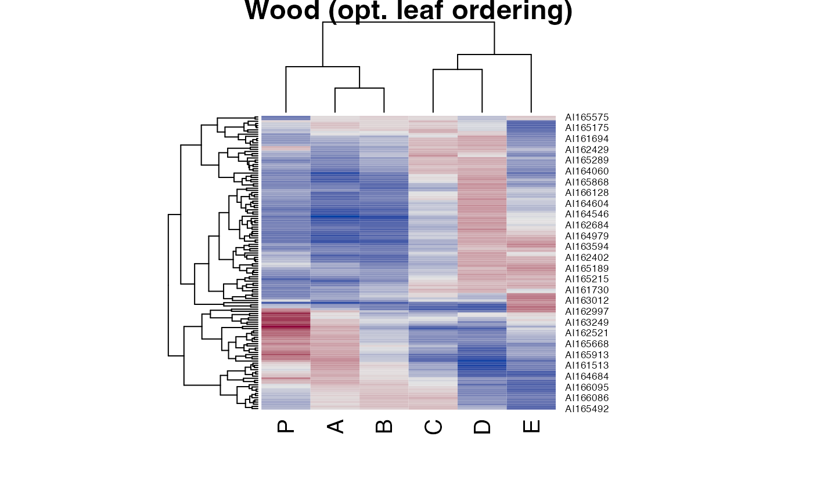
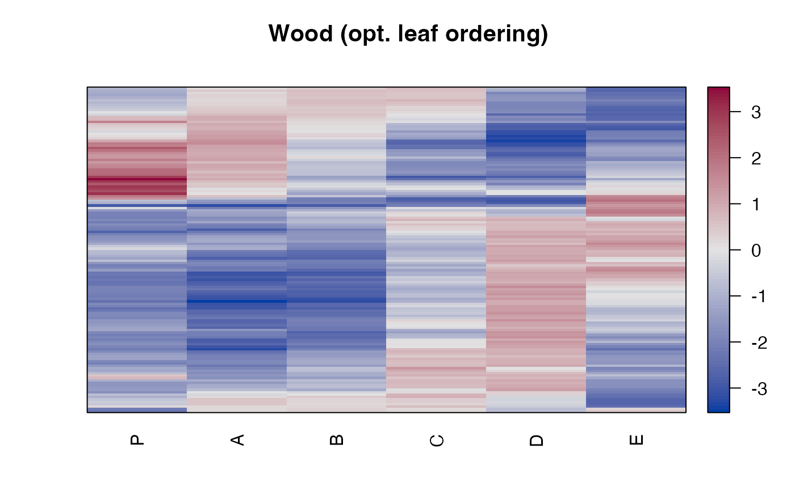
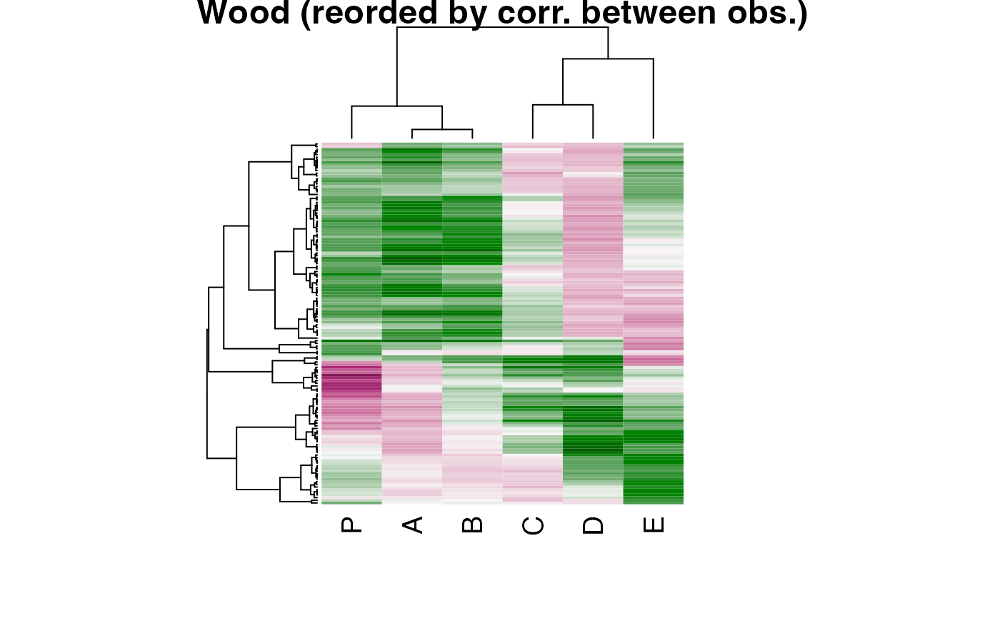
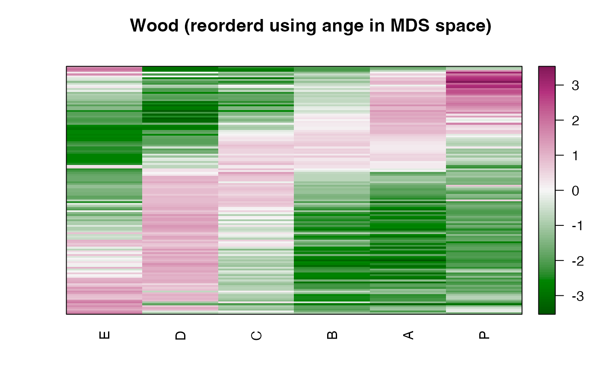
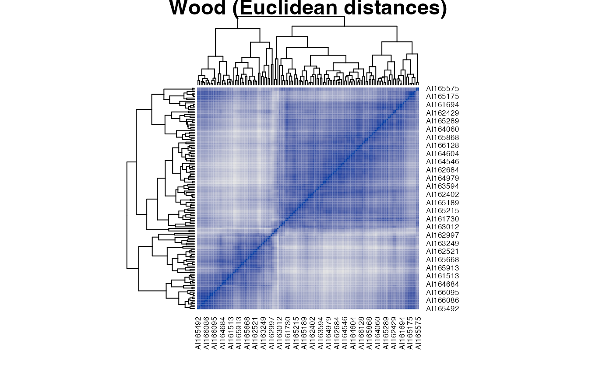
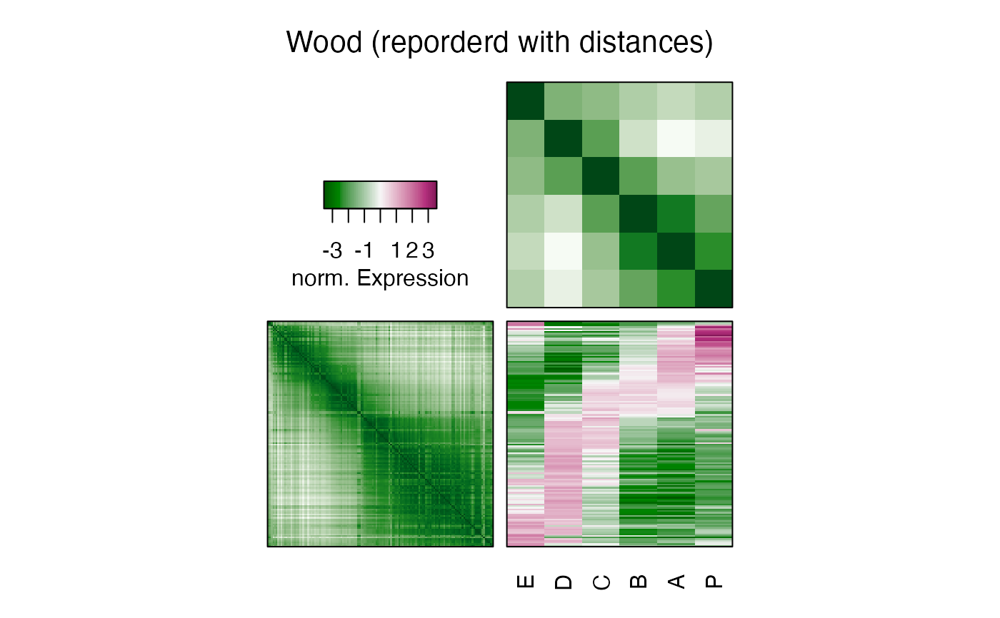
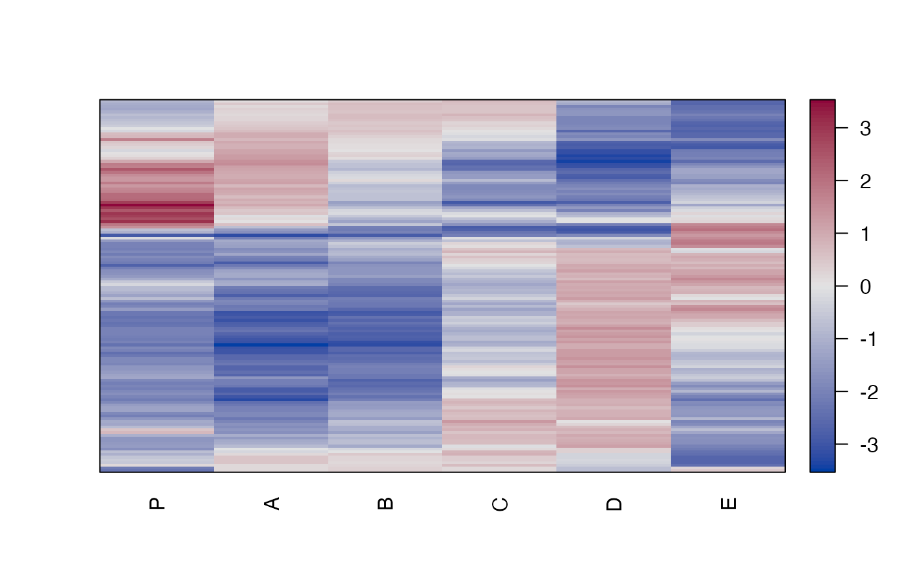
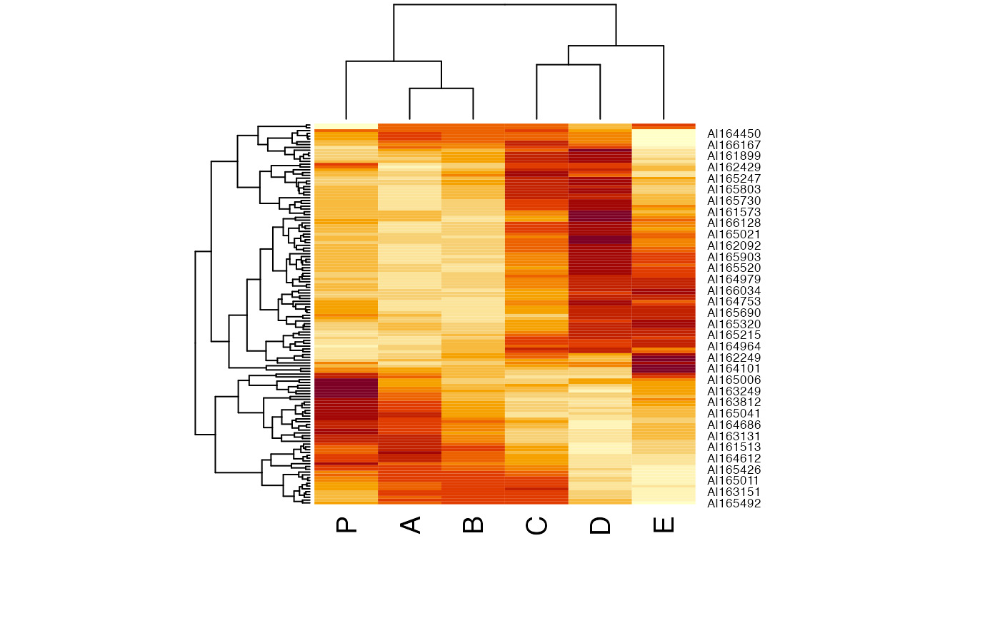
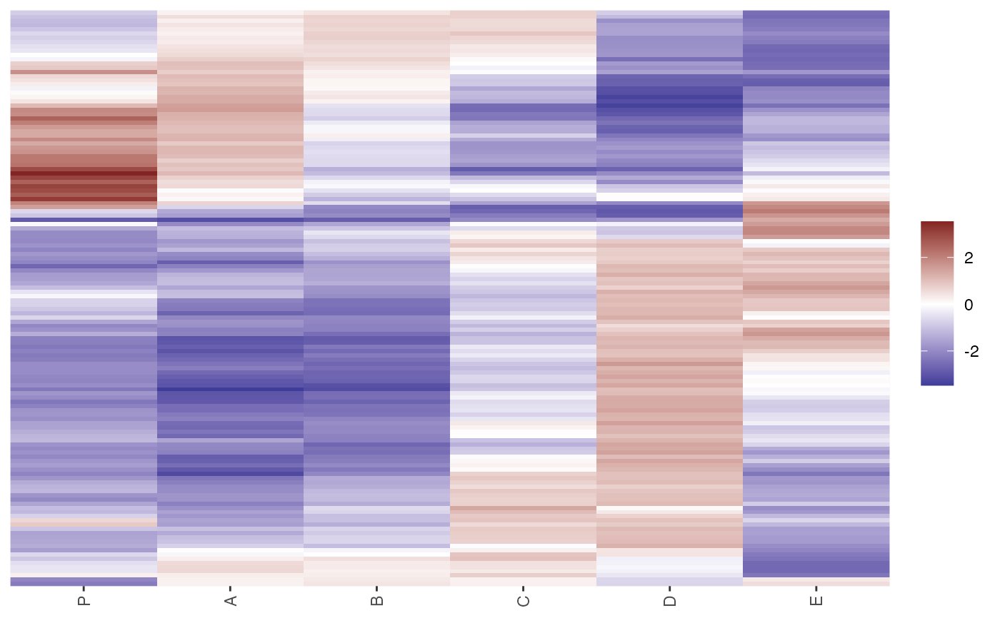

Provides heatmaps reordered using several different seriation methods. This includes dendrogram based reordering with optimal leaf order and matrix seriation-based heat maps.
Arguments
- x
a matrix or a dissimilarity matrix of class dist. If a dissimilarity matrix is used, then the
distfunis ignored.- distfun
function used to compute the distance (dissimilarity) between both rows and columns. For
gghmap(), this parameter is passed on incontrol.- method
a character strings indicating the used seriation algorithm (see
seriate.dist()). If the method results in a dendrogram thenstats::heatmap()is used to show the dendrograms, otherwise reordered distance matrices are shown instead.- control
a list of control options passed on to the seriation algorithm specified in
method.- scale
character indicating if the values should be centered and scaled in either the row direction or the column direction, or none. Default is none.
- showDend
Show dendrograms in the margin?
- col
a list of colors used.
- row_labels, col_labels
a logical indicating if row and column labels in
xshould be displayed. IfNULLthen labels are displayed if thexcontains the appropriate dimname and the number of labels is 25 or less. A character vector of the appropriate length with labels can also be supplied.- ...
further arguments passed on to
stats::heatmap().- prop
logical; change the aspect ratio so cells in the image have a equal width and height.
Value
An invisible list with elements:
- rowInd, colInd
index permutation vectors.
- reorder_method
name of the method used to reorder the matrix.
The list may contain additional elements (dendrograms, colors, etc).
Details
For dendrogram based heat maps, the arguments are passed on to
stats::heatmap() in stats. The following arguments for heatmap()
cannot be used: margins, Rowv, Colv, hclustfun, reorderfun.
For seriation-based heat maps further arguments include:
gpan object of classgparcontaining graphical parameters (seegpar()in package grid).newpagea logical indicating whether to start plot on a new pagepropa logical indicating whether the height and width ofxshould be plotted proportional to its dimensions.showdistDisplay seriated dissimilarity matrices? Values are"none","both","rows"or"columns".keylogical; show a colorkey?key.labLabel plotted next to the color key.marginsbottom and right-hand-side margins are calculated automatically or can be specifies as a vector of two numbers (in lines).zlimrange of values displayed.col,col_distcolor palettes used.
See also
Other plots:
VAT(),
bertinplot(),
dissplot(),
palette(),
pimage()
Examples
data("Wood")
# regular heatmap from package stats
heatmap(Wood, main = "Wood (standard heatmap)")

# Default heatmap does Euclidean distance, hierarchical clustering with
# average-link and optimal leaf ordering
hmap(Wood, main = "Wood (opt. leaf ordering)")

# Heatmap shown without dendrograms (used pimage)
hmap(Wood, main = "Wood (opt. leaf ordering)", showDend = FALSE)

# Heatmap with correlation-based distance, green-red color (greenred is
# predefined) and optimal leaf ordering and no row label
dist_cor <- function(x) as.dist(1 - cor(t(x)))
hmap(Wood, distfun = dist_cor, col = greenred(100), row_labels = FALSE,
main = "Wood (reorded by corr. between obs.)")

# Heatmap with order based on the angle in two-dimensional MDS space.
hmap(Wood, method = "MDS_angle", col = greenred(100), row_labels = FALSE,
main = "Wood (reorderd using ange in MDS space)")

# Heatmap for distances
d <- dist(Wood)
hmap(d, method = "OLO", main = "Wood (Euclidean distances)")

# order-based with dissimilarity matrices
hmap(Wood, method = "MDS_angle", showdist = "both",
col = greenred(100), col_dist = greens(100),
keylab = "norm. Expression", main = "Wood (reporderd with distances)")

# Manually seriate and plot as pimage.
o <- seriate(Wood, method = "heatmap", control = list(dist_fun = dist, seriation_method = "OLO"))
o
#> object of class ‘ser_permutation’, ‘list’
#> contains permutation vectors for 2-mode data
#>
#> vector length seriation method
#> 1 136 OLO
#> 2 6 OLO
pimage(Wood, o, prop = FALSE)

# Note: method heatmap calculates reorderd hclust objects which can be used for many heatmap
# implementations.
heatmap(Wood, Rowv = as.dendrogram(o[[1]]), Colv = as.dendrogram(o[[2]]))

# ggplot 2 version does not support dendrograms in the margin (for now)
if (require("ggplot2")) {
library("ggplot2")
gghmap(Wood) + labs(title = "Wood", subtitle = "Optimal leaf ordering")
# More parameters (see ? ggpimage): reverse column order and flip axes, make a proportional plot
gghmap(Wood, reverse_columns = TRUE) +
labs(title = "Wood", subtitle = "Optimal leaf ordering")
gghmap(Wood, flip_axes = TRUE) +
labs(title = "Wood", subtitle = "Optimal leaf ordering")
gghmap(Wood, flip_axes = TRUE, prop = TRUE) +
labs(title = "Wood", subtitle = "Optimal leaf ordering")
gghmap(Wood, distfun = dist_cor) +
labs(title = "Wood", subtitle = "Reorded by correlation between observations") +
scale_fill_gradient2(low = "darkgreen", high = "red")
gghmap(d, prop = TRUE) +
labs(title = "Wood", subtitle = "Euclidean distances, reordered)")
# Note: the ggplot2-based version cannot show distance matrices in the same plot.
# Manually seriate and plot as pimage.
o <- seriate(Wood, method = "heatmap", control = list(dist_fun = dist,
seriation_method = "OLO"))
o
ggpimage(Wood, o, prop = FALSE)
}
#> Scale for 'fill' is already present. Adding another scale for 'fill', which
#> will replace the existing scale.
